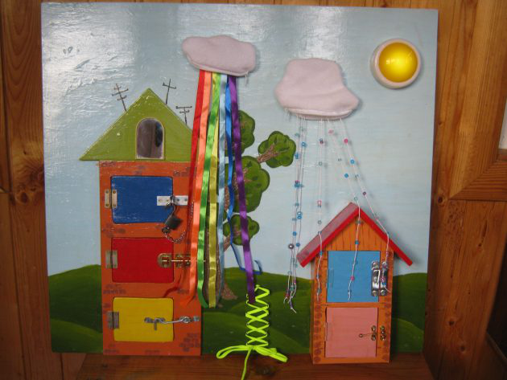
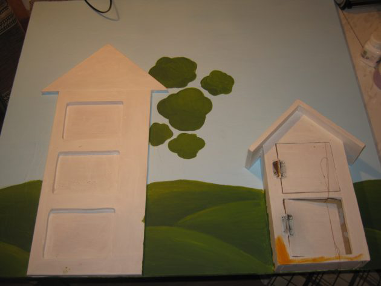
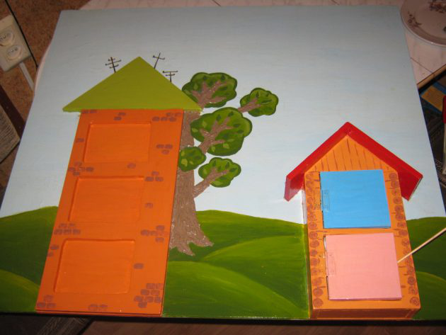
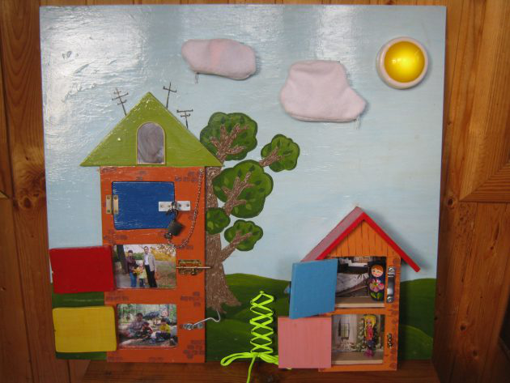
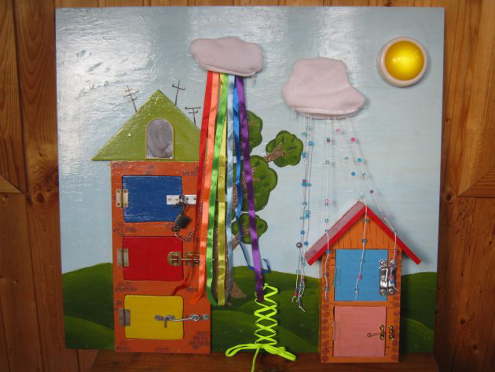

Развивающая доска (или бизиборд, от английского busy board) нужна сразу по трём причинам.
Такой стенд — это часть развивающей среды, которую пропагандировала Мария Монтессори. Её смысл в том, что ребёнку нужно создать условия для самообразования, а дальше он сам со всем справится. Бизиборд как раз знакомит ребёнка со сложными и мелкими деталями, которые встречаются в любом доме: замками, застёжками, дверками. Когда ребёнок играет с выключателем на стенде, можно не бояться за его здоровье.
Для начала соберите материалы. Не обязательно закупаться в магазинах для творчества, достаточно хорошенько порыться в кладовке, на чердаке или в дачном домике: там, где у вас сложен хлам «на всякий случай».
Итак, вот что пригодится для развивающей доски.
Когда вы собрали всё, что можете разместить на доске, сделайте план: либо разложите предметы на основе в свободном порядке, либо придумайте сюжет. Например, обычные домики.

Когда план будет готов, обработайте основу доски. Она должна быть гладкой, в том числе по краям, чтобы обезопасить ребёнка от заноз. Для этого пригодится наждачная бумага и грунтовка для краски. Те же требования к любым деталям, которые вы будете добавлять на доску: их нужно почистить и обезопасить.
После этого доску нужно раскрасить. Если сомневаетесь в своих художественных способностях, купите в ближайшем детском магазине наклейки, доска от этого хуже не станет. На готовый фон добавляйте новые элементы.
На нашем примере из фанеры выпилили макеты домов с дверками. Сами дверки посажены на оконные петли.

Доска создаётся для малышей, но старшие дети могут поучаствовать в росписи. Для доски в примере использованы акриловые краски, но подойдёт даже гуашь или пальчиковые краски. В этом случае рисовать могут и маленькие дети, оставляя на доске отпечатки.

Когда рисование закончено, покройте доску лаком и дайте высохнуть: так рисунки сохранятся на долгое время, ребёнок не испачкается, а доску можно будет протереть и почистить. Добавляйте на доску все элементы, которые захотите разместить. За дверками и окнами могут прятаться фотографии и картинки.

Делайте доску из того, что умеете. Если не любите столярные работы, зато хорошо шьёте, делайте необычные игрушки из ткани. В нашем примере облака — это карманы с застёжками-молниями, внутри которых спрятан дождь. В роли капель выступают цветные ленты и нитки бус. Солнце — это диодный мини-светильник на батарейках, включается нажатием. Можете повесить простой фонарик, чтобы увлечь ребёнка игрой со светом.

Доску не обязательно делать за один день, добавляйте игровые элементы постепенно. Ребёнок заинтересуется даже недоделанной игрушкой.
Собственно, на этом всё. Советы общие, но двух одинаковых досок не бывает: всё зависит от вашей фантазии и набора игрушек, который есть у вас.